[ ]:
from typing import NamedTuple
import matplotlib.colors as mcolors
import matplotlib.pyplot as plt
import numpy as np
import pandas as pd
import seaborn as sns
import statsmodels.api as sm
from biodoe_tools.design import CLOO, PlackettBurman, FullFactorial, DOptimization, d_criterion, DOCLOO
from biodoe_tools.plot import correlation_heatmap, design_heatmap, bio_scatterview
from biodoe_tools.preferences import kwarg_savefig, OUTPUT_DIR, heatmap_pref, dsmat_pref, textcolor
from biodoe_tools.preferences.cmap import sim1
from biodoe_tools.simulation import Sim1, MLR
---------------------------------------------------------------------------
ModuleNotFoundError Traceback (most recent call last)
Cell In[1], line 10
6 import pandas as pd
7 import seaborn as sns
8 import statsmodels.api as sm
9
---> 10 from biodoe_tools.design import CLOO, PlackettBurman, FullFactorial, DOptimization, d_criterion, DOCLOO
11 from biodoe_tools.plot import correlation_heatmap, design_heatmap, bio_scatterview
12 from biodoe_tools.preferences import kwarg_savefig, OUTPUT_DIR, heatmap_pref, dsmat_pref, textcolor
13 from biodoe_tools.preferences.cmap import sim1
File ~/projects/BioDOE/docs/jupyternb/biodoe_tools/__init__.py:1
----> 1 from . import design
2 from . import ml
3 from . import plot
File ~/projects/BioDOE/docs/jupyternb/biodoe_tools/design/__init__.py:4
2 from ._cloo import CLOO
3 from ._fullfact import FullFactorial
----> 4 from ._pb import PlackettBurman
5 from ._d_optimization import d_criterion, DOptimization
6 from ._docloo import DOCLOO
File ~/projects/BioDOE/docs/jupyternb/biodoe_tools/design/_pb.py:2
1 import numpy as np
----> 2 from pyDOE import pbdesign
4 from ._abstract import DesignMatrix, DOE
7 class PlackettBurman(DOE):
ModuleNotFoundError: No module named 'pyDOE'
[ ]:
class Config(NamedTuple):
savefig: bool = True
out: str = OUTPUT_DIR
conf = Config()
[3]:
fig, ax = plt.subplots(figsize=(3, 3))
n_factor = 9
design_heatmap(
design=CLOO, n_factor=n_factor, ax=ax, **dsmat_pref
)
if conf.savefig:
fig.savefig(f"{conf.out}/n={n_factor}.pdf", **kwarg_savefig)
/home/jovyan/jupyternb/doe_modules/plot/_design_matrix.py:29: FutureWarning: DataFrame.applymap has been deprecated. Use DataFrame.map instead.
annot=dsm.applymap(
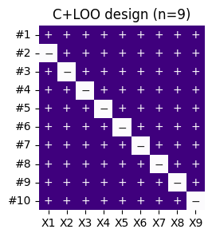
[4]:
fig, ax = plt.subplots(figsize=(11, 9))
correlation_heatmap(
design=CLOO, n_factor=9, ax=ax, **heatmap_pref
)
if conf.savefig:
fig.savefig(f"{conf.out}/corr_n={n_factor}.pdf", **kwarg_savefig)
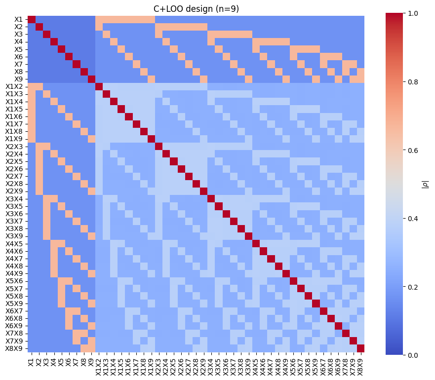
if you wish to have part-by-part visualizations
[5]:
# fig, ax = plt.subplots(figsize=(3, 3))
# sns.heatmap(
# CLOO().get_exmatrix(9)().corr().abs(), ax=ax, **heatmap_pref
# )
# ax.set(title="Main effects \nvs main effects")
# if conf.savefig:
# fig.savefig(f"{conf.out}/main_n={n_factor}", **kwarg_savefig)
[6]:
# fig, ax = plt.subplots(figsize=(9, 2))
# sns.heatmap(
# CLOO().get_exmatrix(9).interactions().corr().abs().iloc[:9, 9:],
# ax=ax, **heatmap_pref
# )
# ax.set(title="Main effects vs interaction terms")
# if conf.savefig:
# fig.savefig(f"{conf.out}/m&i_n={n_factor}", **kwarg_savefig)
[7]:
# fig, ax = plt.subplots(figsize=(9, 7))
# sns.heatmap(
# CLOO().get_exmatrix(9).interactions().corr().abs().iloc[9:, 9:],
# ax=ax, **heatmap_pref
# )
# ax.set(title="Interaction terms vs interaction terms")
# if conf.savefig:
# fig.savefig(f"{conf.out}/interaction_n={n_factor}", **kwarg_savefig)
if you wish to see correlation heatmaps for other ns
[8]:
# for n_f in [2, 3, 4, 5, 6, 7, 8]:
# fig, ax = plt.subplots(figsize=(n_f+2, n_f))
# correlation_heatmap(
# design=CLOO, n_factor=n_f, ax=ax, **heatmap_pref
# )
# ax.set_title(f"C+LOO design (n={n_f})", fontsize="medium" if n_f == 2 else "large")
# if conf.savefig:
# fig.savefig(f"{conf.out}/n={n_f}", **kwarg_savefig)
[9]:
def main1_1(x: int) -> float:
return 1 if x >= 1 else np.nan
def main1_2(x: int) -> float:
return - 1 / x if x >= 2 else np.nan
def main1_int12(x: int) -> float:
return np.sqrt((x - 1) / (2 * x)) if x >= 2 else np.nan
def main1_int23(x: int) -> float:
return -np.sqrt(2 / (x * (x - 1))) if x >= 3 else np.nan
def int12_12(x: int) -> float:
return 1 if x >= 1 else np.nan
def int12_13(x: int) -> float:
return (x - 3) / (2 * (x - 1)) if x >= 3 else np.nan
def int12_34(x: int) -> float:
return -2 / (x - 1) if x >= 4 else np.nan
[10]:
m1m1 = np.vectorize(main1_1)
m1m2 = np.vectorize(main1_2)
m1i12 = np.vectorize(main1_int12)
m1i23 = np.vectorize(main1_int23)
i12i12 = np.vectorize(int12_12)
i12i13 = np.vectorize(int12_13)
i12i34 = np.vectorize(int12_34)
[11]:
n = np.arange(12) + 1
[12]:
fig, ax = plt.subplots(figsize=(4, 3))
ax.plot(n, m1m2(n), label=r"$\rho_{i,j}$", marker="o", markersize=5)
ax.plot(n, m1i12(n), label=r"$\rho_{i\times j,i}$", marker="o", markersize=5)
ax.plot(n, m1i23(n), label=r"$\rho_{i\times j,k}$", marker="o", markersize=5)
ax.plot(n, i12i13(n), label=r"$\rho_{i\times j,i\times l}$", marker="o", markersize=5)
ax.plot(n, i12i34(n), label=r"$\rho_{i\times j,k\times l}$", marker="o", markersize=5)
ax.set_ylim(-1.05, 1.05)
ax.legend(loc="center left", bbox_to_anchor=(1, .5), frameon=False)
ax.set(ylabel="Correlation coefficients", xlabel="n: Num. of factors");
# if conf.savefig:
# fig.savefig(f"{conf.out}/corr", **kwarg_savefig)
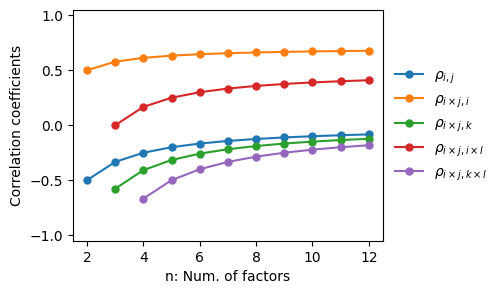
[13]:
fig, ax = plt.subplots(figsize=(4, 3))
ax.plot(n, np.abs(m1m2(n)), label=r"$|\rho_{i,j}|$", marker="o", markersize=5)
ax.plot(n, np.abs(m1i12(n)), label=r"$|\rho_{i\times j,i}|$", marker="o", markersize=5)
ax.plot(n, np.abs(m1i23(n)), label=r"$|\rho_{i\times j,k}|$", marker="o", markersize=5)
ax.plot(n, np.abs(i12i13(n)), label=r"$|\rho_{i\times j,i\times l}|$", marker="o", markersize=5)
ax.plot(n, np.abs(i12i34(n)), label=r"$|\rho_{i\times j,k\times l}|$", marker="o", markersize=5)
ax.set_ylim(-.05, 1.05)
ax.text(6, np.abs(m1m2(n))[5] - .04, r"$|\rho_{i,j}|$", ha="center", va="top", color="C0", size="small")
ax.text(10.5, np.abs(m1i12(n))[-3:-1].mean() + .03, r"$|\rho_{i\times j,i}|$", ha="center", va="bottom", color="C1", size="small")
ax.text(3.5, np.abs(m1i23(n))[2] + .04, r"$|\rho_{i\times j,k}|$", ha="right", va="bottom", color="C2", size="small")
ax.text(10.5, np.abs(i12i13(n))[-3:-1].mean() + .03, r"$|\rho_{i\times j,i\times l}|$", ha="center", va="bottom", color="C3", size="small")
ax.text(5.5, np.abs(i12i34(n))[5] + .04, r"$|\rho_{i\times j,k\times l}|$", ha="left", va="bottom", color="C4", size="small")
ax.set(ylabel="|Correlation coefficients|", xlabel="n: Num. of factors")
ax.set_xticks(range(2, 13, 2))
if conf.savefig:
fig.savefig(f"{conf.out}/corr_abs.pdf", **kwarg_savefig)
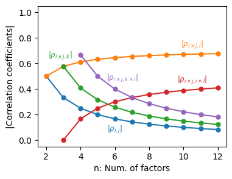
[14]:
from statsmodels.stats.outliers_influence import variance_inflation_factor as vif
[15]:
fig, ax = plt.subplots(figsize=(4, 3))
vif_cloo = np.vectorize(lambda n: vif(sm.add_constant(CLOO().get_exmatrix(n)().values), 1))
vif_pb = np.vectorize(lambda n: vif(sm.add_constant(PlackettBurman().get_exmatrix(n)().values), 1))
x = np.arange(2, 13)
y_cloo, y_pb = vif_cloo(x), vif_pb(x)
ax.plot(x, y_cloo, marker="o", markersize=5, c="C0", label="C+LOO", linewidth=2.5)
ax.plot(x, y_pb, marker="o", markersize=5, c="C1", label="PB")
ax.set_ylim(.95, 2.05)
ax.set(ylabel="VIF", xlabel="n: Num. of factors")
ax.set_xticks(range(2, 13, 2))
ax.text(12, y_cloo[-1] + .05, "C+LOO", ha="right", va="bottom", color="C0")
ax.text(12, y_pb[-1] + .05, "PB", ha="right", va="bottom", color="C1")
if conf.savefig:
fig.savefig(f"{conf.out}/vif.pdf", **kwarg_savefig)
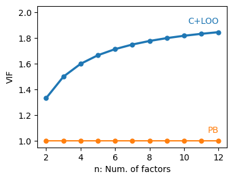
[16]:
fig, ax = plt.subplots(figsize=(4, 3))
cond_cloo = np.vectorize(lambda n: np.linalg.cond(sm.add_constant(CLOO().get_exmatrix(n)().values)))
cond_pb = np.vectorize(lambda n: np.linalg.cond(sm.add_constant(PlackettBurman().get_exmatrix(n)().values)))
x = np.arange(2, 13)
y_cloo, y_pb = cond_cloo(x), cond_pb(x)
ax.plot(x, y_cloo, marker="o", markersize=5, c="C0", label="C+LOO", linewidth=2.5)
ax.plot(x, y_pb, marker="o", markersize=5, c="C1", label="PB")
ax.set(ylabel="Condition numbers", xlabel="n: Num. of factors")
ax.set_xticks(range(2, 13, 2))
ax.text(10, y_cloo[-3] + 5, "C+LOO", ha="right", va="bottom", color="C0")
ax.text(10, y_pb[-3] + 3, "PB", ha="right", va="bottom", color="C1")
if conf.savefig:
fig.savefig(f"{conf.out}/condition_number.pdf", **kwarg_savefig)
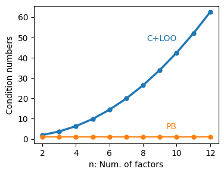
[17]:
def interaction_absorption(design, n_factor, order, n_rep=1):
X = design().get_exmatrix(n_factor)
P = lambda mat: mat @ np.linalg.inv(mat.T @ mat) @ mat.T
PX = P(sm.add_constant(np.vstack([X().values] * n_rep)))
X_int = np.vstack([X.interactions(order).iloc[:, n_factor:].values] * n_rep)
return np.trace(X_int.T @ PX @ X_int) / np.trace(X_int.T @ X_int)
[18]:
fig, ax = plt.subplots(figsize=(4, 3))
x = np.arange(2, 13)
abs_cloo = np.vectorize(lambda n: interaction_absorption(CLOO, n, 2))(x)
abs_pb = np.vectorize(lambda n: interaction_absorption(PlackettBurman, n, 2))(x)
abs_ff = np.vectorize(lambda n: interaction_absorption(FullFactorial, n, 2))(x)
ax.plot(x, abs_cloo, marker="o", markersize=5, label="C+LOO")
ax.plot(x, abs_pb, marker="o", markersize=5, label="PB")
ax.plot(x, abs_ff, marker="o", markersize=5, label="FF", color="C3")
ax.set(ylabel="Interaction Leakage", xlabel="n: Num. of factors")
# ax.legend()
ax.text(8, abs_cloo[-5] - .03, "C+LOO", ha="left", va="top", color="C0")
ax.text(8, abs_pb[-5] - .03, "PB", ha="left", va="top", color="C1")
ax.text(8, abs_ff[-5] + .03, "FF", ha="left", va="bottom", color="C3")
ax.set_xticks(range(2, 13, 2))
if conf.savefig:
fig.savefig(f"{conf.out}/interaction_leakage.pdf", **kwarg_savefig)
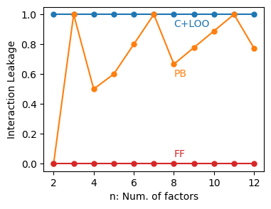
PB
[19]:
fig, ax = plt.subplots(figsize=(3, 3))
n_factor = 9
design_heatmap(
design=PlackettBurman, n_factor=n_factor, ax=ax,
**dsmat_pref
)
if conf.savefig:
fig.savefig(f"{conf.out}/pb_n={n_factor}.pdf", **kwarg_savefig)
/home/jovyan/jupyternb/doe_modules/plot/_design_matrix.py:29: FutureWarning: DataFrame.applymap has been deprecated. Use DataFrame.map instead.
annot=dsm.applymap(
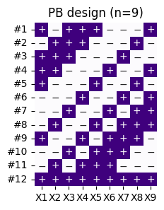
[20]:
fig, ax = plt.subplots(figsize=(11, 9))
correlation_heatmap(
design=PlackettBurman, n_factor=9, ax=ax,
**heatmap_pref
)
if conf.savefig:
fig.savefig(f"{conf.out}/pb_corr_n={n_factor}.pdf", **kwarg_savefig)
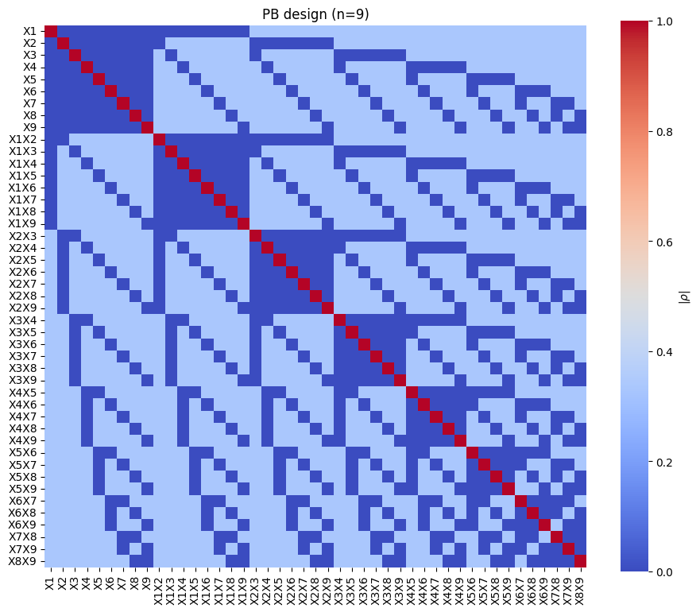
[21]:
fig, ax = plt.subplots(figsize=(4, 3))
n_rep = 10
cloo = [pd.concat([CLOO().get_exmatrix(9)()] * (i + 1)) for i in range(n_rep)]
pb = [pd.concat([PlackettBurman().get_exmatrix(9)()] * (i + 1)) for i in range(n_rep)]
sns.lineplot(
x=np.arange(1, n_rep + 1),
y=np.fromiter(map(d_criterion, map(sm.add_constant, cloo)), float),
label="C+LOO", color="C0", marker="s", markeredgewidth=0,
)
sns.lineplot(
x=np.arange(1, n_rep + 1),
y=np.fromiter(map(d_criterion, map(sm.add_constant, pb)), float),
label="PB", color="C1", marker="s", markeredgewidth=0,
)
ax.set_xticks(np.arange(1, n_rep + 1), np.arange(1, n_rep + 1).astype(int))
ax.set_yscale("log")
ax.set_ylim(np.array(ax.get_ylim()) * np.array([1, 1000]))
ax.legend(loc="upper right", frameon=False)
ax.set(xlabel="N: Num. of replication", ylabel="D-criterion")
if conf.savefig:
fig.savefig(f"{conf.out}/benchmark_d.pdf", **kwarg_savefig)
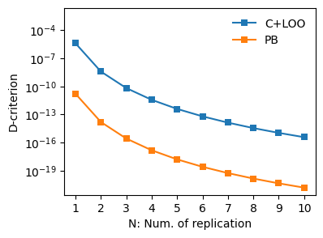
Full Factorial
[22]:
for n_factor in np.arange(2, 6):
figsize = [(3, 3)] * 2 + [(3, 9)] * 2
if n_factor == 3:
fig, ax = plt.subplots(figsize=figsize[n_factor - 2])
design_heatmap(
design=FullFactorial, n_factor=n_factor, ax=ax,
**dsmat_pref
)
if conf.savefig:
fig.savefig(f"{conf.out}/ff_n={n_factor}.pdf", **kwarg_savefig)
/home/jovyan/jupyternb/doe_modules/plot/_design_matrix.py:29: FutureWarning: DataFrame.applymap has been deprecated. Use DataFrame.map instead.
annot=dsm.applymap(
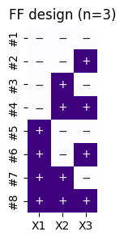
[23]:
for n_f in np.arange(2, 6):
if n_f == 3:
fig, ax = plt.subplots(figsize=(n_f+2, n_f))
correlation_heatmap(
design=FullFactorial, n_factor=n_f, ax=ax,
**heatmap_pref
)
if conf.savefig:
fig.savefig(f"{conf.out}/ff_corr_n={n_f}.pdf", **kwarg_savefig)
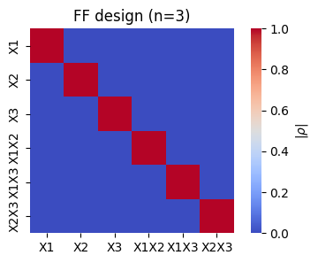
[24]:
fig, ax = plt.subplots(figsize=(4, 3))
n_cloo = np.vectorize(lambda x: x + 1)
n_pb = np.vectorize(lambda x: 4 * (x // 4 + 1))
n_cloo2 = np.vectorize(lambda x: 2 * (x + 1))
n_pb2 = np.vectorize(lambda x: 8 * (x // 4 + 1))
n_cloo3 = np.vectorize(lambda x: 3 * (x + 1))
n_pb3 = np.vectorize(lambda x: 12 * (x // 4 + 1))
lim = 12
m = n[1:lim]
ax.plot(m, n_cloo(m), marker="o", markersize=5, label="C+LOO", linewidth=2.5)
ax.plot(m, n_pb(m), marker="o", markersize=5, label="PB")
ax.text(8, n_cloo(8) - .6, "C+LOO", ha="left", va="top", color="C0")
ax.text(8, n_pb(8) + .6, "PB", ha="left", va="bottom", color="C1")
ax.set(ylabel="Num. of trials", xlabel="n: Num. of factors")
if conf.savefig:
fig.savefig(f"{conf.out}/n_max.pdf", **kwarg_savefig)
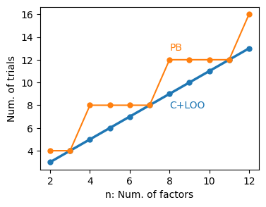
D-optimization
[25]:
fig, ax = plt.subplots(figsize=(3, 6))
n_factor = 9
n_trials = 12
design_heatmap(
design=DOCLOO, n_factor=n_factor, ax=ax,
design_kws={"n_total": n_trials},
**dsmat_pref
)
ax.set_title(ax.get_title(), fontsize="small")
if conf.savefig:
fig.savefig(f"{conf.out}/doptim_{n_trials}trials.pdf", **kwarg_savefig)
/home/jovyan/jupyternb/doe_modules/plot/_design_matrix.py:29: FutureWarning: DataFrame.applymap has been deprecated. Use DataFrame.map instead.
annot=dsm.applymap(
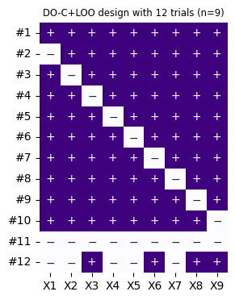
[26]:
fig, ax = plt.subplots(figsize=(11, 9))
correlation_heatmap(
design=DOCLOO, n_factor=9, ax=ax,
design_kws={"n_total": 12},
**heatmap_pref
)
if conf.savefig:
fig.savefig(f"{conf.out}/corr_doptim_{n_trials}trials.pdf", **kwarg_savefig)
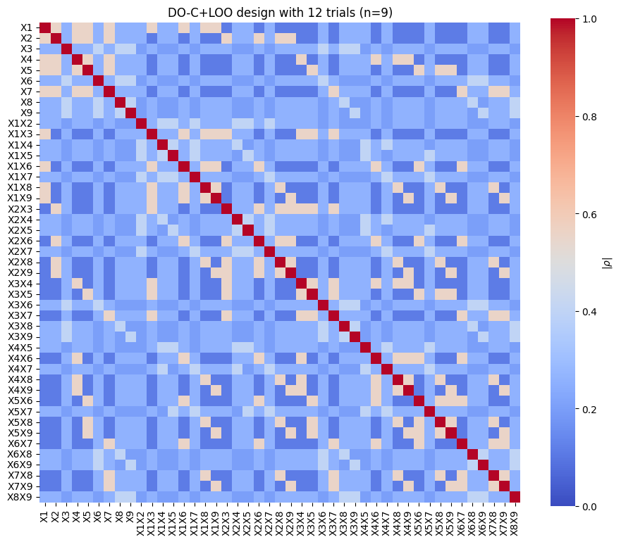
[ ]:
[27]:
lst_mat = [
CLOO().get_exmatrix(9).values
] + [
DOCLOO().get_exmatrix(9, i + 1).values for i in range(40)
]
[28]:
lst_pb = [
PlackettBurman().get_exmatrix(9).values
] + [
DOptimization(
base=PlackettBurman
).get_exmatrix(9, i + 1).values for i in range(38)
]
[29]:
duplicate = lambda arr: np.vstack([arr] * 2)
triplicate = lambda arr: np.vstack([arr] * 3)
[30]:
fig, ax = plt.subplots(figsize=(4, 3))
sns.lineplot(
x=np.arange(10, 51),
y=np.fromiter(map(d_criterion, map(sm.add_constant, lst_mat)), float),
label="DO-C+LOO (N=1)", color="C0",
linewidth=1.5
)
sns.scatterplot(
x=np.arange(10, 51)[1:],
y=np.fromiter(map(d_criterion, map(sm.add_constant, lst_mat)), float)[1:],
color="C0", marker="o", s=5,
linewidth=0
)
sns.lineplot(
x=np.arange(12, 51),
y=np.fromiter(map(d_criterion, map(sm.add_constant, lst_pb)), float),
label="DO-PB (N=1)", color="C1",
linewidth=1.5
)
sns.scatterplot(
x=np.arange(12, 51)[1:],
y=np.fromiter(map(d_criterion, map(sm.add_constant, lst_pb)), float)[1:],
color="C1", marker="o", s=5,
linewidth=0
)
originals = [lst_mat[0], lst_mat[0], lst_pb[0]]
sns.scatterplot(
x=[10, 10, 12],
y=np.fromiter(map(d_criterion, map(sm.add_constant, originals)), dtype=float),
color=[".2", "C0", "C1"], marker=",", s=20,
linewidth=0, label="original designs"
)
ax.set(xlabel="Num. of trials", ylabel="D-criterion")
ax.set_yscale("log")
ax.legend(frameon=False)
xlim = ax.get_xlim()
if conf.savefig:
fig.savefig(f"{conf.out}/doptim.pdf", **kwarg_savefig)
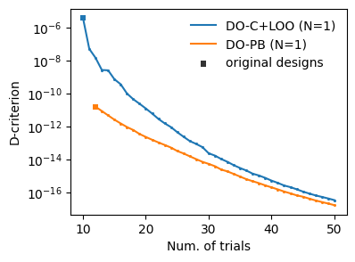
[31]:
fig, ax = plt.subplots(figsize=(4, 3))
sns.lineplot(
x=np.arange(10, 51),
y=np.fromiter(map(d_criterion, map(sm.add_constant, lst_mat)), float),
color="C0"
# , linewidth=1
)
sns.scatterplot(
x=np.arange(10, 51)[1:],
y=np.fromiter(map(d_criterion, map(sm.add_constant, lst_mat)), float)[1:],
color="C0", marker="o", s=5, linewidth=0
)
sns.lineplot(
x=np.arange(10, 51)[:16] * 2,
y=np.fromiter(map(d_criterion, map(duplicate, map(sm.add_constant, lst_mat))), float)[:16],
color="C0"
# , linewidth=2
)
sns.scatterplot(
x=np.arange(10, 51)[1:16] * 2,
y=np.fromiter(map(d_criterion, map(duplicate, map(sm.add_constant, lst_mat))), float)[1:16],
color="C0", marker="o", s=5, linewidth=0
)
sns.lineplot(
x=np.arange(10, 51)[:7] * 3,
y=np.fromiter(map(d_criterion, map(triplicate, map(sm.add_constant, lst_mat))), float)[:7],
color="C0"
# , linewidth=3
)
sns.scatterplot(
x=np.arange(10, 51)[1:7] * 3,
y=np.fromiter(map(d_criterion, map(triplicate, map(sm.add_constant, lst_mat))), float)[1:7],
color="C0", marker="o", s=5, linewidth=0
)
sns.lineplot(x=[0], y=[0], label="DO-C+LOO", color="C0",)
sns.lineplot(x=[0], y=[0], label="PB", color="C1",)
originals = [
sm.add_constant(lst_mat[0])
] * 2 + [
duplicate(sm.add_constant(lst_mat[0])),
triplicate(sm.add_constant(lst_mat[0]))
] + [
sm.add_constant(lst_pb[0]),
duplicate(sm.add_constant(lst_pb[0])),
triplicate(sm.add_constant(lst_pb[0]))
]
sns.scatterplot(
x=[10, 10, 20, 30, 12, 24, 36],
y=np.fromiter(map(d_criterion, originals), dtype=float),
color=[".2"] + ["C0"] * 3 + ["C1"] * 3, marker=",", s=20,
linewidth=0, label="original designs"
)
y = ax.get_ylim()
pb_temp = [sm.add_constant(lst_pb[0]), duplicate(sm.add_constant(lst_pb[0])), triplicate(sm.add_constant(lst_pb[0]))]
texts = ["N=1", "N=2", "N=3"] * 2
xs2 = [13, 23, 33, 12, 24, 36]
ys2 = [1e-6, 1e-9, 5e-11] + list(np.fromiter(map(d_criterion, pb_temp), float) / 5)
identifier = ["do"] * 3 + ["pb"] * 3
for x, y, t, idf in zip(xs2, ys2, texts, identifier):
ax.text(x, y, t, size=7, ha="center", va="center", zorder=11, c="C0" if idf == "do" else "C1")
ax.set_xlim(xlim)
ax.set(
ylabel="D-criterion",
xlabel="$n_{\max}$: total num. of trials"
)
ax.legend(frameon=False)
ax.set_yscale("log")
if conf.savefig:
fig.savefig(f"{conf.out}/doptim_nrep.pdf", **kwarg_savefig)
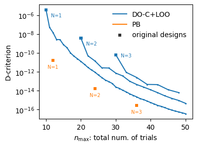
[96]:
fig, ax = plt.subplots(figsize=(4, 3))
sns.lineplot(
x=np.arange(10, 51),
y=np.fromiter(map(lambda mat: np.mean([vif(mat, i + 1) for i in range(9)]), map(sm.add_constant, lst_mat)), float),
color="C0", label="DO-C+LOO (N=1)",
# , linewidth=1
)
sns.scatterplot(
x=np.arange(10, 51)[1:],
y=np.fromiter(map(lambda mat: np.mean([vif(mat, i + 1) for i in range(9)]), map(sm.add_constant, lst_mat)), float)[1:],
color="C0", marker="o", s=5, linewidth=0
)
sns.lineplot(
x=np.arange(12, 51),
y=np.fromiter(map(lambda mat: np.mean([vif(mat, i + 1) for i in range(9)]), map(sm.add_constant, lst_pb)), float),
color="C1", label="DO-PB (N=1)",
# , linewidth=1
)
sns.scatterplot(
x=np.arange(12, 51)[1:],
y=np.fromiter(map(lambda mat: np.mean([vif(mat, i + 1) for i in range(9)]), map(sm.add_constant, lst_pb)), float)[1:],
color="C1", marker="o", s=5, linewidth=0
)
originals = [
sm.add_constant(lst_mat[0])
] * 2 + [
sm.add_constant(lst_pb[0]),
]
sns.scatterplot(
x=[10, 10, 12],
y=np.fromiter(map(lambda mat: np.array([vif(mat, i + 1) for i in range(9)]).max(), originals), dtype=float),
color=[".2"] + ["C0"] + ["C1"], marker=",", s=20,
linewidth=0, label="original designs"
)
ax.set_xlim(xlim)
ax.set_ylim(.95, 2.05)
ax.set(
ylabel="mean VIF",
xlabel="Num. of trials"
)
ax.legend(frameon=False)
# ax.set_yscale("log")
# if conf.savefig:
# fig.savefig(f"{conf.out}/doptim_nrep_vif.pdf", **kwarg_savefig)
[96]:
<matplotlib.legend.Legend at 0x7feacd26e410>
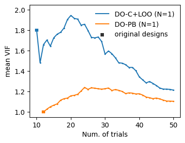
[98]:
fig, ax = plt.subplots(figsize=(4, 3))
sns.lineplot(
x=np.arange(10, 51),
y=np.fromiter(map(np.linalg.cond, map(sm.add_constant, lst_mat)), float),
color="C0", label="DO-C+LOO (N=1)",
# , linewidth=1
)
sns.scatterplot(
x=np.arange(10, 51)[1:],
y=np.fromiter(map(np.linalg.cond, map(sm.add_constant, lst_mat)), float)[1:],
color="C0", marker="o", s=5, linewidth=0
)
sns.lineplot(
x=np.arange(12, 51),
y=np.fromiter(map(np.linalg.cond, map(sm.add_constant, lst_pb)), float),
color="C1", label="DO-PB (N=1)",
# , linewidth=1
)
sns.scatterplot(
x=np.arange(12, 51)[1:],
y=np.fromiter(map(np.linalg.cond, map(sm.add_constant, lst_pb)), float)[1:],
color="C1", marker="o", s=5, linewidth=0
)
originals = [
sm.add_constant(lst_mat[0])
] * 2 + [
sm.add_constant(lst_pb[0])
]
sns.scatterplot(
x=[10, 10, 12],
y=np.fromiter(map(np.linalg.cond, originals), dtype=float),
color=[".2"] + ["C0"] + ["C1"], marker=",", s=20,
linewidth=0, label="original designs"
)
y = ax.get_ylim()
pb_temp = [sm.add_constant(lst_pb[0]), duplicate(sm.add_constant(lst_pb[0])), triplicate(sm.add_constant(lst_pb[0]))]
texts = ["N=1", "N=2", "N=3"] * 2
xs2 = [13, 23, 33, 12, 24, 36]
ys2 = [1e-6, 1e-9, 5e-11] + list(np.fromiter(map(np.linalg.cond, pb_temp), float) / 5)
identifier = ["do"] * 3 + ["pb"] * 3
# for x, y, t, idf in zip(xs2, ys2, texts, identifier):
# ax.text(x, y, t, size=7, ha="center", va="center", zorder=11, c="C0" if idf == "do" else "C1")
ax.set_xlim(xlim)
# ax.set_ylim(-1.5, 51.5)
ax.set(
ylabel="Condition number",
xlabel="Num. of trials"
)
ax.legend(frameon=False)
# ax.set_yscale("log")
# if conf.savefig:
# fig.savefig(f"{conf.out}/doptim_nrep_cond.pdf", **kwarg_savefig)
[98]:
<matplotlib.legend.Legend at 0x7feacd037eb0>

[ ]: